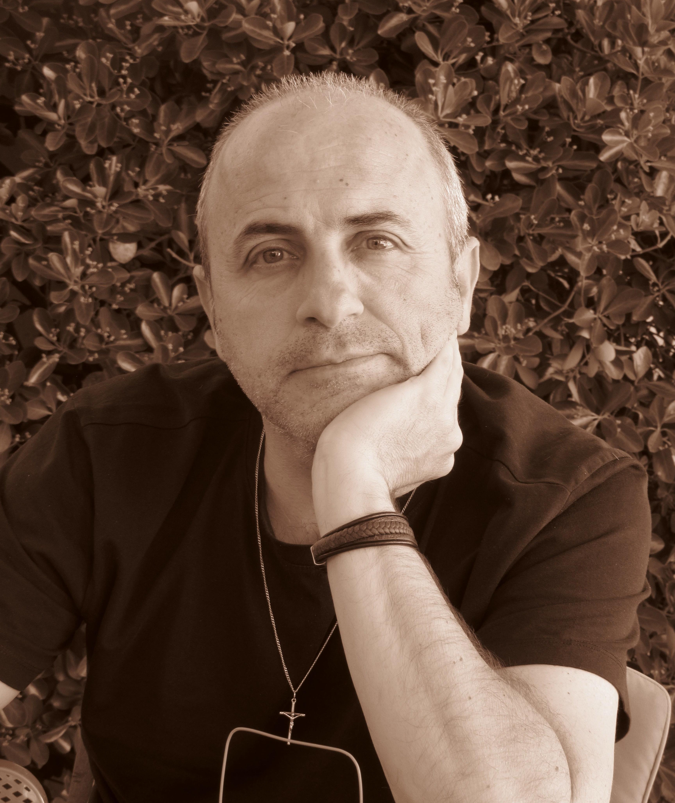

J.J. Castro Sánchez
CATEDRÁTICO DE UNIVERSIDAD 𓀁
Docente vocacional: mi padre fue maestro en Alhama de Granada y de él aprendí a enseñar con cercanía y compromiso. Soy ingeniero en Informática, doctor por la Universidad de Granada, y actualmente ejerzo en la Universidad de Castilla-La Mancha. Creo en una tecnología con impacto humano, y procuro reflejarlo en cada proyecto y en cada clase.
Fábrica de Harínas La Purísima
Una de las locuras en las que me encuentro guerreando fuera de mi actividad profesional. Le doy voz a mi amiga la Fábrica de Harinas La Purísima de Alhama de Granada.
Mi Página Web
Conóceme un poco mejor en mi página web.
Contacto
josejesus.castro@uclm.es